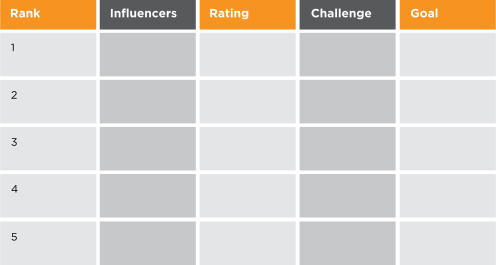
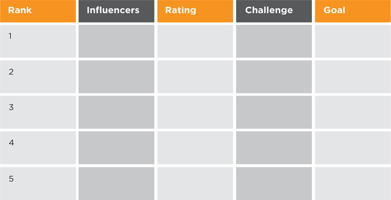

Once you have modeled your ecosystem, you need to name the individual influencers in each group. Narrow down your influencers to only a few individuals for each group to keep it workable.
If you are feeling overwhelmed, use the Top Influencers Scorecard and just identify five top influencers (Figure 5.8).
Figure 5.8
Top Influencers Scorecard
 
Rate how well influencers support you and your ideas on a scale of 1 to 5, with 1 being “work against you” and 5 being “enthusiastically support.” I call this the “friends or foes” rating.
If your goal is to change careers or move into a new position, your influencers may not be that familiar with you. This scorecard will make it clear what relationships you need to work on.
Remember the 90/10 rule. Only a small number of individuals will influence the many about your brand. The goal is to move these influencers to become your advocates, or at least to neutralize them if they are detractors.
What are influencer relationship challenges? Common challenges include lack of awareness, misperceptions, dislike or negative associations.
What are appropriate influencer relationship goals? Your relationship goals can be: Move the dial from a “2” to a “3,” get an endorsement or testimonial, partner on a project, approve a proposal, get promoted, or change a negative opinion.